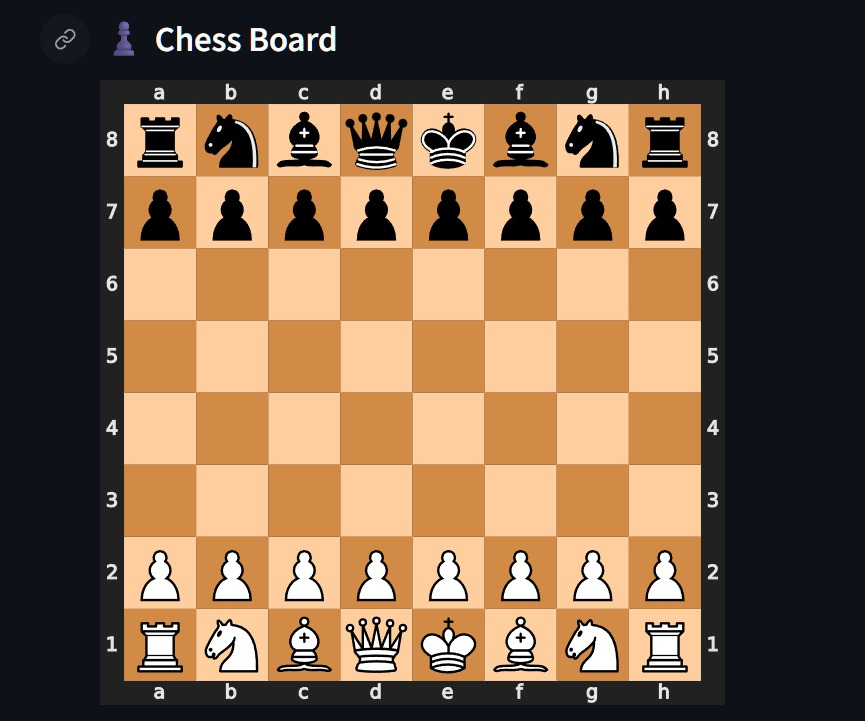
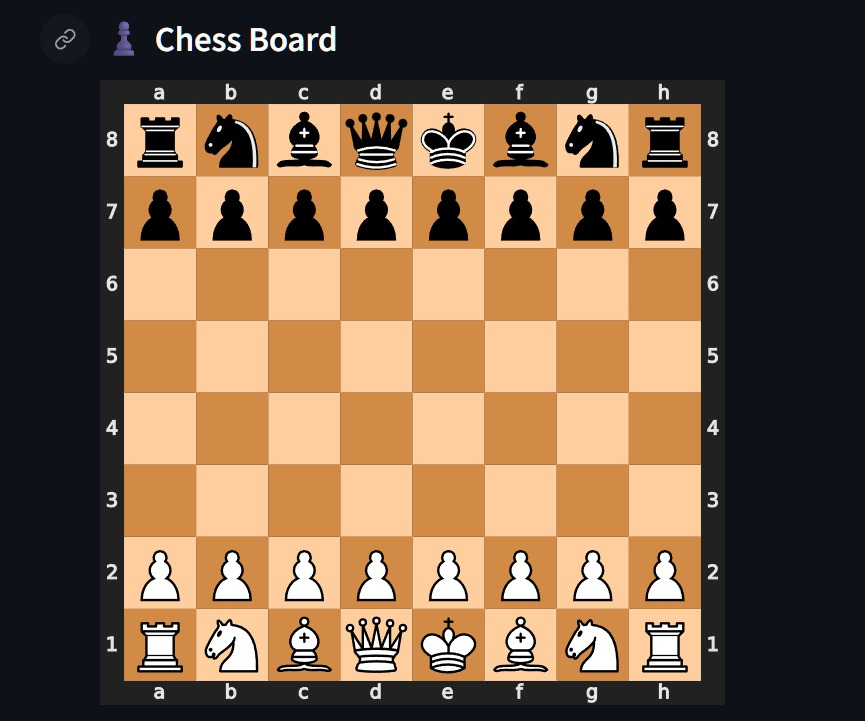

Design and Development of a Chess Engine
Using Data Structures
Undergraduate Research Forum (UGRF 21)
Course: ECE251 – Data Structures
Team Members:
Ahmed Essam Selouma – 241001867
Faris Emad – 241002282
Bahaa Eldin Mohammed – 241000433
Mazen Mohammed Shabaan – 241001767
Problem Summary
Building a chess engine requires precise rule enforcement,
efficient state management, and reliable coordination between
game logic and user interaction. The complexity of chess arises
from diverse piece movements, special rules such as castling
and en passant, and the continuous evaluation of game states
including check, checkmate, stalemate, and draw conditions.
Managing these requirements in a structured and efficient
manner presents a significant design challenge.
This project addresses these challenges by developing a
data-structure-based chess engine and linking it to a
graphical user interface. The primary objective is to
demonstrate how fundamental data structures can be applied
to model a complex, rule-driven system while supporting
real-time interaction through a GUI.
Methodology
The chess engine is implemented in C++ using a modular
architecture that separates game logic from presentation.
The chessboard is represented as an 8×8 array of structured
objects, where each object stores information about piece
type, color, and movement state. Legal moves are generated
dynamically and validated according to official chess rules
before execution. Special rules such as castling, en passant,
and pawn promotion are explicitly handled within the engine
logic.
To support advanced functionality, a doubly linked list is
used to store move history. Stack-based structures enable
undo and redo operations, while a hash-based mapping tracks
board configurations for repetition detection.
Chess Engine Interface
 

The images above show the actual graphical user interface used to interact with the chess engine. The interface allows users to input moves, monitor engine status, view legal moves, and visualize the chessboard in real time. This visual layer enhances usability while remaining logically separated from the core engine.
Achievements & Gained Skills
This project provided hands-on experience in applying data
structures to a real, interactive software system. The team
strengthened its understanding of arrays, linked lists,
stacks, and hash maps through their integration into a
complete chess engine. Additional skills were developed in
object-oriented programming, state management, and rule-
based algorithm implementation.
The project also enhanced experience in cross-language
integration by connecting a C++ backend with a Python-based
graphical interface using inter-process communication.
Discussion & Conclusion
This project demonstrates that complex, rule-based systems such as chess can be effectively modeled using fundamental data structures. By separating game logic from the graphical interface, the system achieves clarity, maintainability, and scalability. The modular design allows the engine to remain independent while supporting different user interfaces.
Future Work & Suggestions
Future development includes enhancing the graphical interface and expanding platform support. One planned improvement is replacing or complementing the Streamlit interface with a web-based frontend using React. Additional future work includes integrating AI techniques such as Minimax, optimizing performance, and adding game analysis features.
Thank You
Questions?